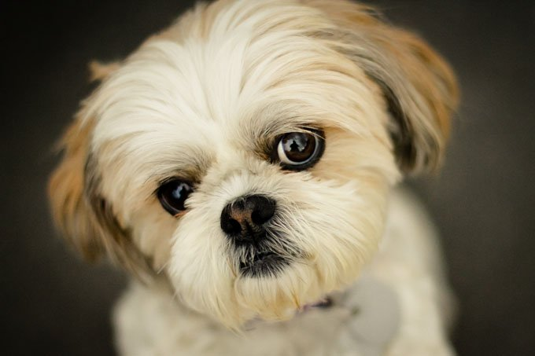

Hi, my name is Kieth Fresnillo and my main hobbies is playing guitar and trading, i spent my time in practicing trading for my personal income and savings and the other time to spent is playing guitar. i have a band in PSU named GRANDEZA we played last time before pandemic and lockdown it was a great event for us. My real dream is to become a pilot. I take only this course BSIT program because i also like involving in computers especially in technical.
My dog is a shihtzu type and he is very cute, his name is Jumong. He is now 5 years old and has already giving signs of old age like having a cataract which is normal for them. I feed him dogfood which is pedigree, he likes very much chicken and pork meat in his meal. He loves to be cuddled and pet. He is very stubborn pet by i assure you he will love you very much.
